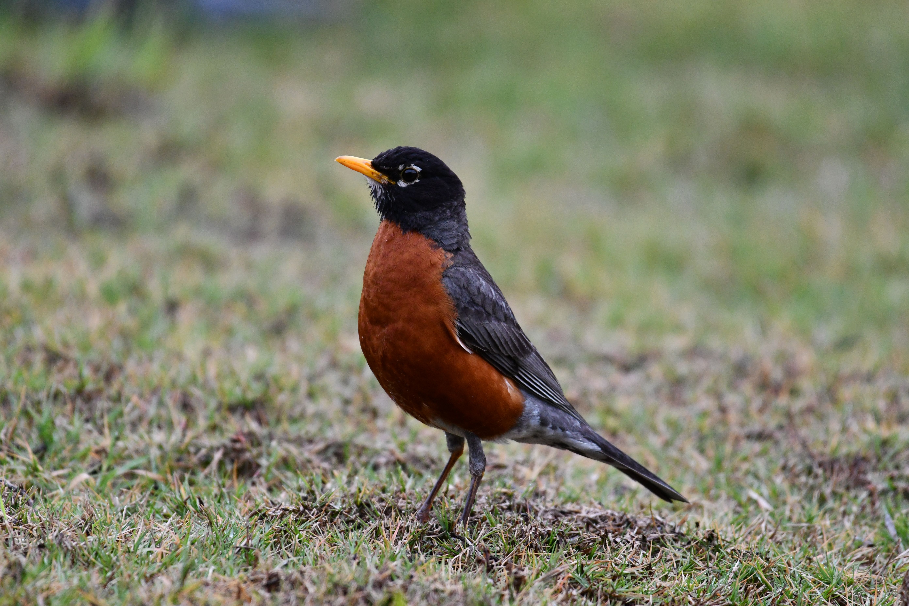

The American Robin is a familiar North American thrush with a grey-brown back, orange-red breast and yellowish bill. It is particularly well known for running across lawns and open ground while searching for earthworms. It also eats large quantities of berries and fruit and can be found in forests, gardens, parks and suburban neighbourhoods.
American Robin is best separated from Varied Thrush by looking at the overall shape and the strongest plumage pattern rather than one small mark. Compared with Varied Thrush, it has a different combination of colour, proportions and typical behaviour, which becomes clearer when the whole bird is visible. Eastern Bluebird can also resemble it in some settings, but differences in bill shape, tail length, wing pattern, posture or habitat can help narrow the identification. Calls and behaviour are useful supporting clues when plumage is difficult to see, especially for birds that spend much of their time in dense vegetation. Using several features together is more reliable than identifying the bird from a single characteristic.
Cornell Lab of Ornithology — All About Birds / eBird, Audubon — North American bird identification and natural history, IUCN Red List of Threatened Species — conservation status